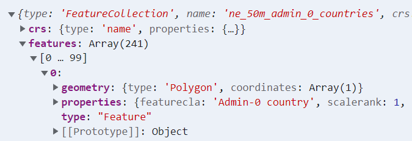
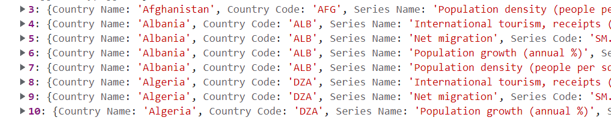
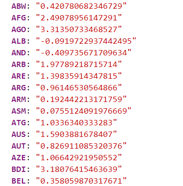
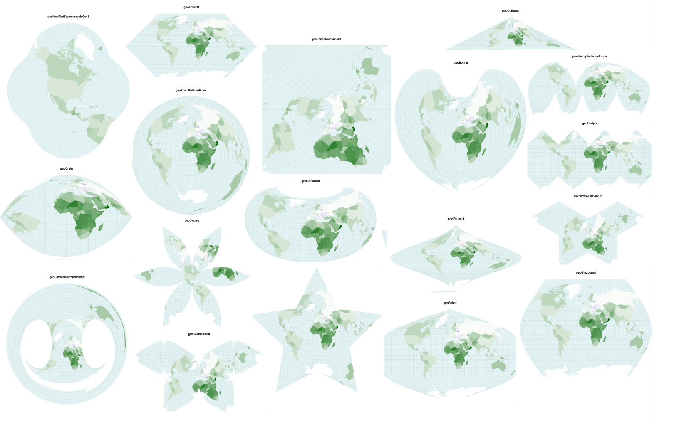
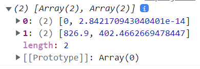
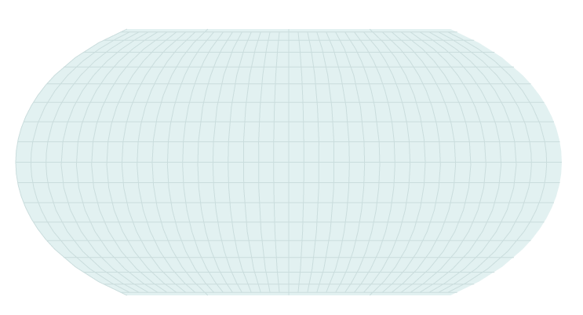
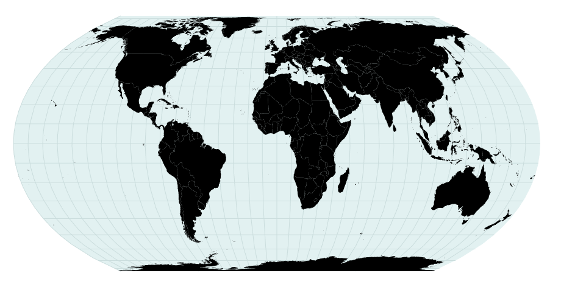
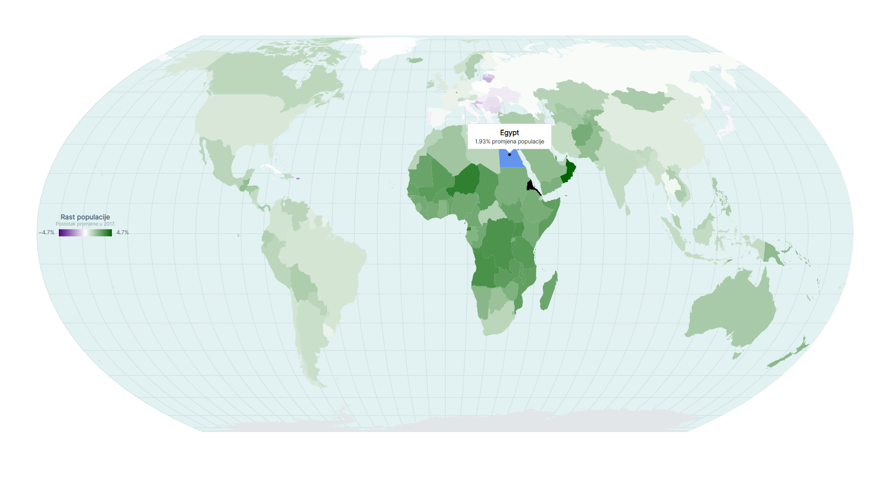

Vizualizacija podataka
Vježba 06
Vježba 06
- Na današnjim vježbama ćemo napraviti novu vrstu vizualizacije
- mapu svijeta sa nijansa
- 2 skupa podataka
- povezivanje i obrada podataka
- Projekcije
- Animacije i interakcije
Učitavanje skupa podataka
- Prvi skup podataka koji moramo učitati je onaj koji sadrži geolokacijske podatke o državama
- to se nalazi u datoteci "world-geojson.json"
- Možemo ga učitati i ispisati na konzoli
const oblikDrzava = await d3.json('../world-geojson.json')
Učitavanje skupa podataka
- Podaci koji će nam biti potrebni se nalaze u features nizu objekata
- svaki objekt predstavlja jednu državu i sadrži svojstva
- geometry - niz koordinata (latituda i longituda)
- properties - podaci o tom objektu (državi)
- svaki objekt predstavlja jednu državu i sadrži svojstva
- Geometrijske podatke ćemo kasnije učitati, a za početak ćemo napraviti dvije accessor funkcije koje će iz jednog objekta dohvatiti dva podatka - puno ime države i kraticu (id)
const imeDrzaveAccessor = d => d.properties["NAME"]
const idDrzaveAccessor = d => d.properties["ADM0_A3_IS"]Učitavanje skupa podataka
- Drugi skup podataka je vezan uz relativni rast populacije (po državi)
- nalazi se u datoteci "data_bank_data.csv" pa možemo i njega učitati i provjeriti
const dataset = await d3.csv("../data_bank_data.csv")
Učitavanje skupa podataka
- Problem je što su podaci "u neredu"
- imamo više zapisa za istu državu
- u svakom zapisu su različiti podaci
- Nas zapravo zanimaju samo 2 podatka
- kratica (kôd) države i rast populacije
- napisati ćemo vlastitu funkciju za filtriranje skupa podataka
const metrika = "Population growth (annual %)"
let metrikaPoDrzavi = {}
dataset.forEach(d => {
if (d["Series Name"] != metrika)
return
metrikaPoDrzavi[d["Country Code"]] = d["2017 [YR2017]"] || 0
})Učitavanje skupa podataka
- Filtrirani podaci se sada nalaze u varijabli metrikaPoDrzavi
- možemo provjeriti jesmo li ispravno dohvatili podatke

Dimenzije grafa
- Možemo se vratiti na poznate akcije
- definirati ćemo dimenzije grafa (za početak bez visine)
let dimenzije = {
sirina: window.innerWidth * 0.9,
margine: {
top: 10,
right: 10,
bottom: 10,
left: 10,
},
}
dimenzije.grSirina = dimenzije.sirina
- dimenzije.margine.left - dimenzije.margine.right- Koliko će nam biti visok graf?
- to ovisi o projekciji...
Projekcija
- Projekcija je način na koji se sfera predstavlja na 2D prikazu
- d3 modul d3-geo ima 15-ak različitih projekcija koje služe za prikazivanje GeoJSON podataka (kakve imamo u našem skupu)

Projekcija
- U našem primjeru ćemo koristiti d3.geoEqualEarth() projekciju koja je prikladna za prikaz cijele zemljine sfere
- kako bi izračunali visinu grafa, prvo moramo iscrtati projekciju u dostupnoj širini pa ćemo vidjeti koju visinu zauzima
- Također, nekoliko ćemo puta morati navesti da je oblik kojeg projiciramo sfera pa ćemo napraviti pomoćnu konstantu
const sfera = ({type: "Sphere"})Projekcija
- Kod "klasičnih" grafova morali smo prvo definirati skalu kako bi znali skalirati domenu vrijednosti u raspon piksela
- Sada imamo sličan princip
- želimo koordinate skalirati na dostupnu širinu prema nekoj odabranoj projekciji
- srećom, sama metoda za projekciju ima ugrađenu tu opciju
- Nakon što smo definirali projekciju, koristimo metodu d3.geoPath da iz projekcije dobijemo putanje za iscrtavanje obrisa
const projekcija = d3.geoEqualEarth()
.fitWidth(dimenzije.grSirina, sfera)
const putanjaGenerator = d3.geoPath(projekcija)
console.log(putanjaGenerator(sfera))Projekcija
- Ako pogledamo što generira posljednja funkcija, vidimo poznati oblik - naredbe za iscrtavanje putanje (path)
- funkcija putanjaGenerator ima ugrađenu metodu bounds koja vraća niz [x, y] koordinata za pripadajući GeoJSON objekt
- dobili smo rubne koordinate (bounding box) za projekciju
- to možemo jednostavno provjeriti pomoću konzole

console.log(putanjaGenerator.bounds(sfera))Dimenzije grafa
- Sada napokon možemo dovršiti dimenzije našeg grafa
- koristimo opciju destrukturiranja kako bi jednostavno dohvatili željene vrijednosti
const [[x0, y0], [x1, y1]] = putanjaGenerator.bounds(sfera)
dimenzije.grVisina = y1;
dimenzije.visina = dimenzije.grVisina
+ dimenzije.margine.top + dimenzije.margine.bottom
Crtanje grafa
- Nakon dimenzija nastavljamo sa definiranjem okvira i granica
- ovo smo napravili dovoljno puta pa nije potrebno dodatno objašnjenje
const okvir = d3.select("#okvir")
.append("svg")
.attr("width", dimenzije.sirina)
.attr("height", dimenzije.visina)
const granice = okvir.append("g")
.style("transform",
`translate(${dimenzije.margine.left}px, ${dimenzije.margine.top}px)`
)Definiranje razmjera
- Ovaj put imamo malo drugačije skaliranje nego inače
- za x i y skaliranje će se pobrinuti projekcija...
- Na grafu želimo prikazati razmjer rasta (ili pada) populacije
- koristiti ćemo kanal boje (nijanse)
- Za početak ćemo dohvatiti sve vrijednosti iz (filtriranog) skupa podataka i provjeriti min. i max. vrijednosti
const vrijednosti = Object.values(metrikaPoDrzavi)
const graniceVrijednosti = d3.extent(vrijednosti)
console.log(graniceVrijednosti)Definiranje razmjera
- Možemo uočiti da imamo pozitivne i negativne vrijednosti
- zapravo nam trebaju dvije nijanse - pozitivna i negativna
- bijela boja će nam biti neutralna (0% rast stanovništva)
- nijansa zelene određuje pozitivni rast
- nijansa crvene negativni rast
- zapravo nam trebaju dvije nijanse - pozitivna i negativna
- Raspon nam je [-0.02 do 4.66] - imamo dvije mogućnosti
- skaliranje po tom rasponu: -0.02 je "najcrvenije" a 4.66 "najzelenije" - bolje vidimo razlike u negativnom dijelu ali jačina boja ne odgovara na dvije skale
- skaliranje u rasponu [-4.66, +4.66] - možemo usporediti stopu pozitivnog i negativnog rasta ali dio raspona crvene boje će nam ostati "neiskorišten"
- idemo sa ovom drugom opcijom
Definiranje razmjera
- Iako znamo koja je vrijednost veća, to ćemo i programski izračunati
- tako smo sigurni i ako se promijeni skup podataka
- Nakon toga koristimo već poznatu metodu scaleLinear
- razlika je što ovaj put imamo 3 parametra
- skala ima 2 dijela - od min do 0 i od 0 do max
const maxPromjena = d3.max([-graniceVrijednosti[0], graniceVrijednosti[1]])
const skalaBoja = d3.scaleLinear()
.domain([-maxPromjena, 0, maxPromjena])
.range(["indigo", "white", "darkgreen"])Crtanje podataka
- Možemo započeti sa crtanjem podataka
- krećemo od projekcije
- Na projekciju treba dodati i mrežu (graticule)
- koristimo ugrađenu metodu d3.geoGraticule10() - svakih 10°
- Prethodno definirana metoda za generiranje putanje nam služi i za iscrtavanje projekcije i za mrežu, samo moramo poslati odgovarajući parametar
- CSS datoteka sadrži oblikovanje za ove klase
const zemlja = granice.append("path")
.attr("class", "zemlja")
.attr("d", putanjaGenerator(sfera))
const mrezaJson = d3.geoGraticule10()
const mreza = granice.append("path")
.attr("class", "mreza")
.attr("d", putanjaGenerator(mrezaJson))
Crtanje podataka
- Nakon projekcije i mreže možemo napokon iscrtati i obrise država
- sjetite se da nam se koordinate država (i podaci) nalaze u svojstvu features prvog skupa podataka
- to ćemo vezati uz naš graf
- za svaki podatkovni element dodajemo SVG path element i nad njim pozivamo funkciju za generiranje putanje
- rezultat bi trebale biti iscrtane države svijeta
- hover je također dodan u CSS-u
const drzave = granice.selectAll(".drzava")
.data(oblikDrzava.features)
.enter().append("path")
.attr("class", "drzava")
.attr("d", putanjaGenerator)
.attr("fill", "black")
Crtanje podataka
- Naravno, države nam ne bi trebale biti crne...
- moramo za svaki podatkovni element dohvatiti kôd (id) države
- zatim u drugom skupu podataka pronaći vrijednost (rast populacije) koji pripada tom ID-u
- dohvaćenu vrijednost treba "provući" kroz skalu kako bi dobili željenu nijansu boje
- tu boju pridružiti fill atributu za svaku državu
const drzave = granice.selectAll(".drzava")
.data(oblikDrzava.features)
.enter().append("path")
.attr("class", "drzava")
.attr("d", putanjaGenerator)
.attr("fill", d => {
const vr = metrikaPoDrzavi[idDrzaveAccessor(d)]
if (typeof vr == "undefined") return "#e3e6e9"
return skalaBoja(vr)
})Dodavanje interakcija
- Ovaj put ćemo malo zaobići standardni redoslijed
- prije pomoćne grafike ćemo dodati interakcije
- Početna HTML struktura sadrži poznati okvir za detalje
- Započinjemo sa definiranjem događaja, praznim metodama i dohvaćanjem okvira za detalje
drzave
.on("mouseenter", onMouseEnter)
.on("mouseleave", onMouseLeave)
const detalji = d3.select("#detalji")
function onMouseEnter(e,d){
detalji.style("opacity", 1)
}
function onMouseLeave(){
detalji.style("opacity", 0)
}Dodavanje interakcija
- Sada možemo implementirati funkciju onMouseEnter
- Krećemo sa dohvatom podataka - sjetite se koji podatak je pridružen svakoj državi (možemo vidjeti i na konzoli)
- dohvaćamo ime i ID države
- ime odmah prikazujemo u okviru
- prema ID-u iz pomoćnog objekta dohvaćamo stopu rasta
- prije prikazivanja formatirati ćemo vrijednost
detalji.select("#drzava")
.text(imeDrzaveAccessor(d))
const formatP = d3.format(",.2f")
const vrijednost = metrikaPoDrzavi[idDrzaveAccessor(d)]
detalji.select("#vrijednost")
.text(`${formatP(vrijednost || 0)}%`)Dodavanje interakcija
- Moramo još pozicionirati okvir
- funkcija za generiranje oblika država (putanjaGenerator) također sadrži i ugrađenu metodu .centroid() koja vraća središte iscrtanog oblika (u našem slučaju države)
- iscrtati ćemo kružić na toj lokaciji
- iskoristiti ćemo to kao koordinate za prikaz okvira
- ne zaboravite margine i "trik" za pozicioniranje okvira
- funkcija za generiranje oblika država (putanjaGenerator) također sadrži i ugrađenu metodu .centroid() koja vraća središte iscrtanog oblika (u našem slučaju države)
const [centerX, centerY] = putanjaGenerator.centroid(d)
const kruzic = granice.append("circle")
.attr("class", "kruzic")
.attr("cx", centerX)
.attr("cy", centerY)
.attr("r", 3)
detalji.style("transform", `translate(
calc(-50% + ${centerX + dimenzije.margine.left}px),
calc(-100% + ${centerY + dimenzije.margine.top}px)
)`)Dodavanje interakcija
- Zadnji detalj vezan uz interakcije je uklanjanje kružića kada pomaknemo pokazivač miša izvan države
function onMouseLeave(e,d){
detalji.style("opacity", 0)
d3.selectAll(".kruzic").remove()
}Iscrtavanje pomoćne grafike
- Preostalo nam je još iscrtati pomoćnu grafiku
- nemamo klasične x i y osi pa ćemo iscrtati legendu
- Prvo ćemo napraviti novu grupu (g element) kojeg ćemo pozicionirati sa lijeve strane karte
- visina će ovisiti o širini mape
const legendaGrupa = okvir.append("g")
.attr("transform", `translate(120,${
dimenzije.sirina < 800
? dimenzije.grVisina - 30
: dimenzije.grVisina * 0.5
})`)Iscrtavanje pomoćne grafike
- Dodavanje opisa je jednostavno
- samo moramo "pogoditi" poziciju
const legendaNaslov = legendaGrupa.append("text")
.attr("y", -23)
.attr("class", "legenda-naslov")
.text("Rast populacije")
const legandaOpis = legendaGrupa.append("text")
.attr("y", -9)
.attr("class", "legenda-opis")
.text("Postotak promjene u 2017.")Iscrtavanje pomoćne grafike
- Idući korak je malo složeniji
- želimo iscrtati legendu sa korištenim nijansama boje kako bi korisnici znali što predstavlja koja nijansa
- Iscrtati ćemo pravokutnik sa gradijentom kao odvojeni element te ga naknadno "ubaciti"
- Za tu svrhu koristimo SVG defs element
- dodajemo mu linearGradient element sa zadanim id-om
const defs = okvir.append("defs")
const legNijansaId = "legenda-nijansa"
const gradijent = defs.append("linearGradient")
.attr("id", legNijansaId)Iscrtavanje pomoćne grafike
- SVG linearGradient element unutar sebe sadrži <stop> elemente koji označavaju granice gradijenta
- Nakon što smo definirali naš gradijent, pridružujemo mu raspon boja u našoj skali (tri boje) i za svaku radimo <stop> element
-
<stop> elementi moraju imati 2 atributa
- stop-color - boja granice, to imamo u samom podatku
- offset - pozicija granice (0%-100%), u našem slučaju imamo tri boje pa želimo granice na rubovima i jednu u sredini
-
<stop> elementi moraju imati 2 atributa
const gradijent = defs.append("linearGradient")
.attr("id", legNijansaId)
.selectAll("stop")
.data(skalaBoja.range())
.enter().append("stop")
.attr("stop-color", d => d)
.attr("offset", (d, i) => `${i * 50}%`)Iscrtavanje pomoćne grafike
- Sada možemo definirati dimenzije pravokutnika unutar kojega će se iscrtati gradijent
- dodati ćemo ga u našu grupu za prikaz legende
- postaviti poziciju
- te ispuniti sa gradijentom - uz pomoć id-a
const legednaSirina = 120
const legendaVisina = 16
const legendaNijansa = legendaGrupa.append("rect")
.attr("x", -legednaSirina / 2)
.attr("height", legendaVisina)
.attr("width", legednaSirina)
.style("fill", `url(#${legNijansaId})`)Iscrtavanje pomoćne grafike
- Na kraju nam je samo preostalo ispisati granice uz gradijent
- ovo se ponovno svodi samo na vještinu pozicioniranja
const legendaVrD = legendaGrupa.append("text")
.attr("class", "legenda-vrijednost")
.attr("x", legednaSirina / 2 + 10)
.attr("y", legendaVisina / 2)
.text(`${d3.format(".1f")(maxPromjena)}%`)
const legendaVrL = legendaGrupa.append("text")
.attr("class", "legenda-vrijednost")
.attr("x", -legednaSirina / 2 - 10)
.attr("y", legendaVisina / 2)
.text(`${d3.format(".1f")(-maxPromjena)}%`)
.style("text-anchor", "end")Iscrtavanje pomoćne grafike
- Krajnji rezultat nam je kompletna mapa svijeta sa svim elementima
